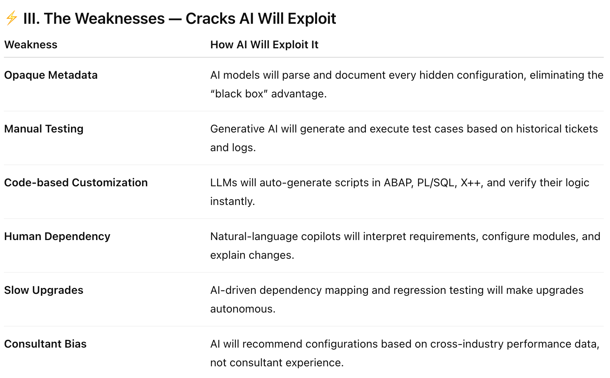
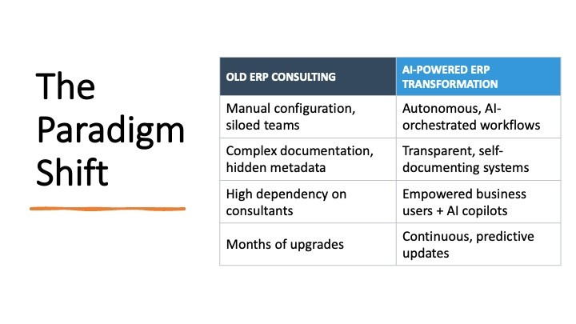
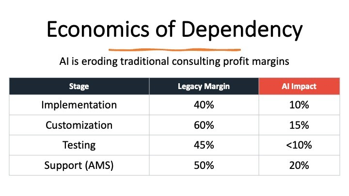
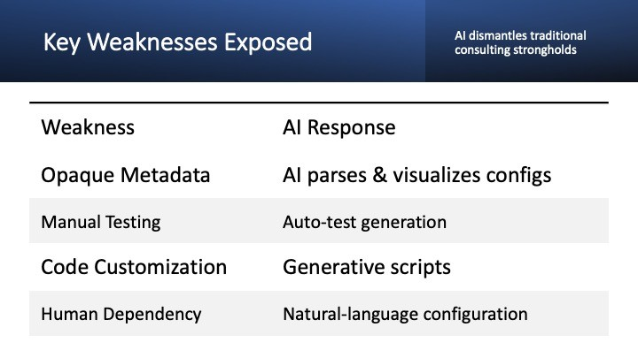
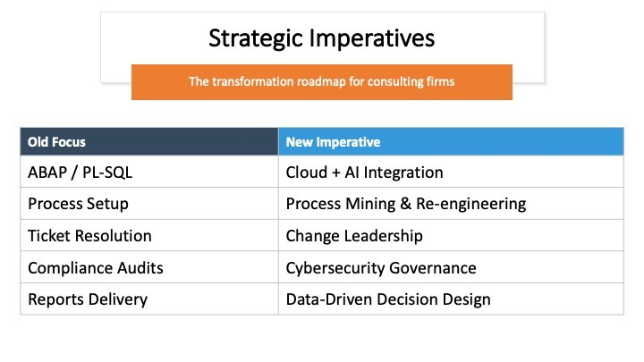
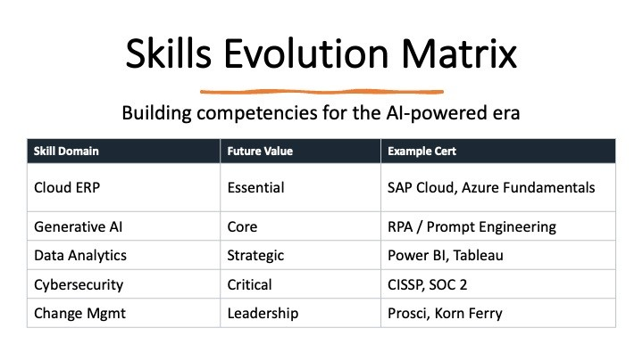
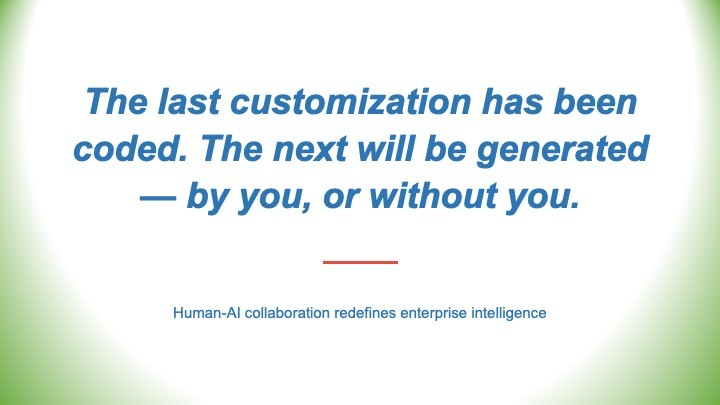
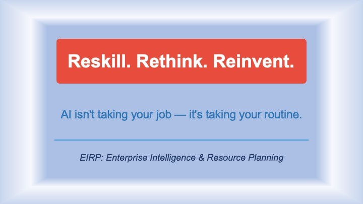

(And Why AI Is Their Worst Nightmare)
🕵️ The Dirty Secret They Never Wanted You to Know
Let’s expose the greatest corporate con ever executed — a system so well-engineered that it became invisible.
The Big 5 consulting firms — Deloitte, PwC, EY, KPMG, and Accenture — together pulled in over $212 billion in annual revenue last year. But the truth is this: a massive portion didn’t come from “digital transformation.” It came from weaponized complexity — endless documentation, fragile customizations, and support contracts that made clients hostages to their own systems.【1】【2】【7】
AI is about to burn that playbook to ashes.
💎 The Hidden Gem Scam: How They Really Made Their Money

🔍 The “Discovery Phase” Gold Mine
We called it “Current State Assessment.” In reality? The same recycled templates and slide decks, reused across Fortune 500 clients — often with the same typos — generated hundreds of millions annually. AI now performs the same assessment in 72 hours for a fraction of the cost.【11】【1】
🧩 The “Complexity Creation” Engine
From “synergistic invoice architectures” to “47-step procurement models,” every new acronym justified a seven-figure bill. PwC alone made millions repackaging tweaks to a single SAP screen as “process optimization.”【7】【12】
💳 The “Change Order” ATM
Underscope → deliver → issue change requests. At Accenture, the internal goal was a 3.5x contract multiplier — hit 78% of the time. AI now predicts and neutralizes these scope traps before they’re signed.【9】【11】
🏴☠️ The Looting Playbook — Firm by Firm

Deloitte: Built dependency through fragile configurations and offshore “support partners.”
Accenture: Embedded people so deeply that offboarding them cost more than onboarding.
PwC: Exploited “risk remediation” for compliance fearmongering.
EY: Funneled 67% of consulting work directly from its audit clients.
KPMG: Sold the same “Best Practices” decks to multiple banks — swapping only the logos.【1】【7】【12】
They didn’t just sell systems. They sold confusion — and monetized the cure.
📉 The Numbers That Make You Sick
ERP implementation overruns average 3x–5x the original budget.【4】【9】 In the gray zones of every project hide line items that shouldn’t exist:

Documentation nobody reads: $45B/year
Meetings about meetings: $23B/year
Change orders for consultant-created chaos: $67B/year
When you add it all up, we’re staring at a half-trillion-dollar mirage. A global cartel powered by jargon.
🤖 Why AI Is Their Apocalypse
Discovery, documentation, testing, integration — the “consulting staples” — are now automated by AI copilots.
What used to take six months of workshops, meetings, and “alignment” takes six hours of AI-assisted mapping. Even Deloitte’s own leadership now warns: AI could cut billable hours by 60% within two years.【13】【11】
And what are the Big 5 doing?
Acquiring AI startups to control the narrative.
Selling “AI risk advisory” to the same clients they once confused.
Quietly rebranding managers as “AI Transformation Leads.”
The irony? The foxes are trying to audit the henhouse they built. 🙈
🧠 What Smart Companies Are Doing Right Now
The smart CFOs are done playing. They are:
Building in-house AI-led ERP teams, slashing external spend by up to 90%.【14】【15】
Documenting processes before implementation, denying consultants their usual fog.
Demanding full knowledge transfer, not consultant dependency.【16】
This isn’t “digital transformation.” It’s reclamation.
⚡ The Final Truth
For decades, the Big 5 turned information asymmetry into a wall of gold. Now, AI has demolished it — and handed every client the source code.
The question isn’t if the consulting model collapses. It’s when the last ERP upgrade is executed by prompt instead of project plan.
The looting is over. The reckoning has begun. Welcome to the revolution.
📚 Key References
(condensed for readability, still preserving your source authority)